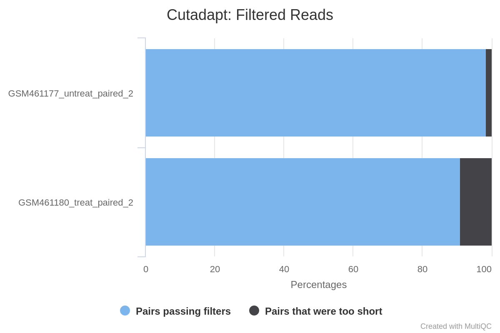
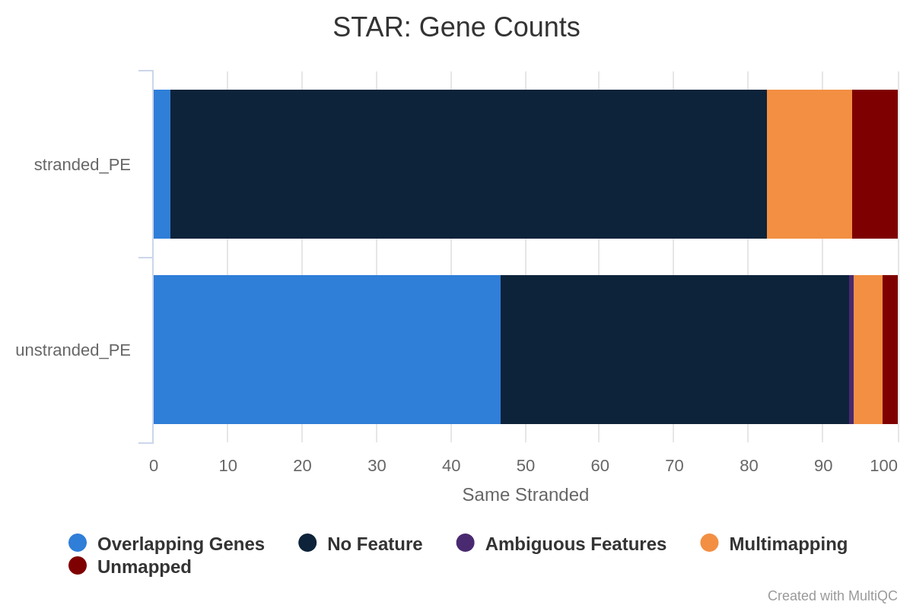
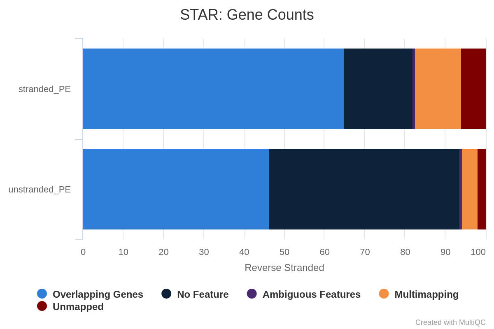

rating Rating:5.0 (3 recent ratings, 105 all time)
version Revision: 93
In recent years, RNA sequencing (in short RNA-Seq) has become a very widely used technology to analyze the continuously changing cellular transcriptome, i.e. the set of all RNA molecules in one cell or a population of cells. One of the most common aims of RNA-Seq is the profiling of gene expression by identifying genes or molecular pathways that are differentially expressed (DE) between two or more biological conditions. This tutorial demonstrates a computational workflow for the detection of DE genes and pathways from RNA-Seq data by providing a complete analysis of an RNA-Seq experiment profiling Drosophila cells after the depletion of a regulatory gene.
In the study of Brooks et al. 2011, the authors identified genes and pathways regulated by the Pasilla gene (the Drosophila homologue of the mammalian splicing regulators Nova-1 and Nova-2 proteins) using RNA-Seq data. They depleted the Pasilla (PS) gene in Drosophila melanogaster by RNA interference (RNAi). Total RNA was then isolated and used to prepare both single-end and paired-end RNA-Seq libraries for treated (PS depleted) and untreated samples. These libraries were sequenced to obtain RNA-Seq reads for each sample. The RNA-Seq data for the treated and the untreated samples can be compared to identify the effects of Pasilla gene depletion on gene expression.
In this tutorial, we illustrate the analysis of the gene expression data step by step using 7 of the original datasets:
Each sample constitutes a separate biological replicate of the corresponding condition (treated or untreated). Moreover, two of the treated and two of the untreated samples are from a paired-end sequencing assay, while the remaining samples are from a single-end sequencing experiment.
Comment: Full data
The original data are available at NCBI Gene Expression Omnibus (GEO) under accession number GSE18508. The raw RNA-Seq reads have been extracted from the Sequence Read Archive (SRA) files and converted into FASTQ files.
In the first part of this tutorial we will use the files for 2 out of the 7 samples to demonstrate how to calculate read counts (a measure of the gene expression) from FASTQ files (quality control, mapping, read counting). We provide the FASTQ files for the other 5 samples if you want to reproduce the whole analysis later.
In the second part of the tutorial, read counts of all 7 samples are used to identify and visualize the DE genes, gene families and molecular pathways due to the depletion of the PS gene.
Hands-on: Data upload
Create a new history for this RNA-Seq exercise
To create a new history simply click the new-history icon at the top of the history panel:
Import the FASTQ file pairs from Zenodo or a data library:
GSM461177 (untreated): GSM461177_1 and GSM461177_2
Check that the datatype is fastqsanger (e.g. notfastq). If it is not, please change the datatype to fastqsanger.
Click on the galaxy-pencilpencil icon for the dataset to edit its attributes
In the central panel, click galaxy-chart-select-dataDatatypes tab on the top
In the galaxy-chart-select-dataAssign Datatype, select fastqsanger from “New type” dropdown
Tip: you can start typing the datatype into the field to filter the dropdown menu
Click the Save button
Create a paired collection named 2 PE fastqs, rename your pairs with the sample name followed by the attributes: GSM461177_untreat_paired and GSM461180_treat_paired.
Click on galaxy-selectorSelect Items at the top of the history panel
Check all the datasets in your history you would like to include
Click n of N selected and choose Build List of Dataset Pairs
Change the text of unpaired forward to a common selector for the forward reads
Change the text of unpaired reverse to a common selector for the reverse reads
Click Pair these datasets for each valid forward and reverse pair.
Enter a name for your collection
Click Create List to build your collection
Click on the checkmark icon at the top of your history again
Question
How are the DNA sequences stored?
What are the other entries of the file?
The DNA sequences are stored in a FASTQ file, in the second line of every 4-line group.
This file format is called FASTQ format. It stores sequence information and quality information. Each sequence is represented by a group of 4 lines with the 1st line being the sequence id, the second the sequence of nucleotides, the third a transition line and the last one a sequence of quality score for each nucleotide.
The reads are raw data from the sequencing machine without any pretreatments. They need to be assessed for their quality.
Quality control
During sequencing, errors are introduced, such as incorrect nucleotides being called. These are due to the technical limitations of each sequencing platform. Sequencing errors might bias the analysis and can lead to a misinterpretation of the data. Adapters may also be present if the reads are longer than the fragments sequenced and trimming these may improve the number of reads mapped.
Sequence quality control is therefore an essential first step in your analysis. We will use similar tools as described in the “Quality control” tutorial: FastQC to create a report of sequence quality, MultiQC (Ewels et al. 2016) to aggregate generated reports and Cutadapt (Marcel 2011) to improve the quality of sequences via trimming and filtering.
Unfortunately the current version of multiQC (the tool we use to combine reports) does not support list of pairs collections.
We will first need to transform our the list of pairs to a simple list.
The current situation is on top and the Flatten collection tool will transform it to the situation displayed on bottom:
Flatten collection with the following parameters convert the list of pairs into a simple list:
“Input Collection”: 2 PE fastqs
FastQC ( Galaxy version 0.74+galaxy0) with the following parameters:
param-collection“Raw read data from your current history”: Output of Flatten collectiontool selected as Dataset collection
Click on param-collectionDataset collection in front of the input parameter you want to supply the collection to.
Select the collection you want to use from the list
Inspect the webpage output of FastQCtool for the GSM461177_untreat_paired sample (forward and reverse)
Question
What is the read length?
The read length of both mates is 37 bp.
As it is tedious to inspect all these reports individually we will combine them with MultiQC ( Galaxy version 1.11+galaxy1).
MultiQC ( Galaxy version 1.11+galaxy1) to aggregate the FastQC reports with the following parameters:
In “Results”:
“Results”
“Which tool was used generate logs?”: FastQC
In “FastQC output”:
param-repeat“Insert FastQC output”
param-collection“FastQC output”: FastQC on collection N: Raw data (output of FastQCtool)
Inspect the webpage output from MultiQC for each FASTQ
Question
What do you think of the quality of the sequences?
What should we do?
Everything seems good for 3 of the files. The GSM461177_untreat_paired have 10.6 millions of paired sequences and GSM461180_treat_paired 12.3 millions of paired sequences. But in GSM461180_treat_paired_reverse (reverse reads of GSM461180) the quality decreases quite a lot at the end of the sequences.
All files except GSM461180_treat_paired_reverse have a high proportion of duplicated reads (expected in RNA-Seq data).
The “Per base sequence quality” is globally good with a slight decrease at the end of the sequences. For GSM461180_treat_paired_reverse, the decrease is quite large.
There are almost no known adapters and overrepresented sequences.
If the quality of the reads is poor, we should:
Check what is wrong and think about possible reasons for the poor read quality: it may come from the type of sequencing or what we sequenced (high quantity of overrepresented sequences in transcriptomics data, biased percentage of bases in Hi-C data)
Ask the sequencing facility about it
Perform some quality treatment (taking care not to lose too much information) with some trimming or removal of bad reads
We should trim the reads to get rid of bases that were sequenced with high uncertainty (i.e. low quality bases) at the read ends, and also remove the reads of overall bad quality.
Question
What is the relation between GSM461177_untreat_paired_forward and GSM461177_untreat_paired_reverse ?
The data has been sequenced using paired-end sequencing.
The paired-end sequencing is based on the idea that the initial DNA fragments (longer than the actual read length) is sequenced from both sides. This approach results in two reads per fragment, with the first read in forward orientation and the second read in reverse-complement orientation. The distance between both reads is known. Thus, it can be used as an additional piece of information to improve the read mapping.
With paired-end sequencing, each fragment is more covered than with single-end sequencing (only forward orientation sequenced):
One file with the sequences corresponding to forward orientation of all the fragments
One file with the sequences corresponding to reverse orientation of all the fragments
Here GSM461177_untreat_paired_forward corresponds to the forward reads and GSM461177_untreat_paired_reverse to the reverse reads.
Hands-on: Trimming FASTQs
Cutadapt ( Galaxy version 4.8+galaxy1) with the following parameters to trim low quality sequences:
“Single-end or Paired-end reads?”: Paired-end Collection
param-collection“Paired Collection”: 2 PE fastqs
In “Other Read Trimming Options”
“Quality cutoff(s) (R1)”: 20
In “Read Filtering Options”
“Minimum length (R1)”: 20
In “Additional outputs to generate”
Select: Report: Cutadapt's per-adapter statistics. You can use this file with MultiQC.
Question
Why do we run the trimming tool only once on a paired-end dataset and not twice, once for each dataset?
The tool can remove sequences if they become too short during the trimming process. For paired-end files it removes entire sequence pairs if one (or both) of the two reads became shorter than the set length cutoff. Reads of a read-pair that are longer than a given threshold but for which the partner read has become too short can optionally be written out to single-end files. This ensures that the information of a read pair is not lost entirely if only one read is of good quality.
MultiQC ( Galaxy version 1.11+galaxy1) to aggregate the Cutadapt reports with the following parameters:
In “Results”:
param-repeat“Results”
“Which tool was used generate logs?”: Cutadapt/Trim Galore!
param-collection“Output of Cutadapt”: Cutadapt on collection N: Report (output of Cutadapttool) selected as Dataset collection
Question
How many sequence pairs have been removed because at least one read was shorter than the length cutoff?
How many basepairs have been removed from the forward reads because of bad quality? And from the reverse reads?
147,810 (1.4%) reads were too short for GSM461177_untreat_paired and 1,101,875 (9%) for GSM461180_treat_paired.
Open image in new tab
Figure 8: Cutadapt Filtered reads
The MultiQC output only provides the proportion of bp trimmed in total, not for each Read. To get this information, you need to go back to the individual reports. For GSM461177_untreat_paired, 5,072,810 bp have been trimmed from the forward reads (Read 1) and 8,648,619 bp from the reverse reads (Read 2) because of quality. For GSM461180_treat_paired, 10,224,537 bp from the forward reads and 51,746,850 bp from the reverse reads. This is not a surprise; we saw that at the end of the reads the quality was dropping more for the reverse reads than for the forward reads, especially for GSM461180_treat_paired.
Mapping
To make sense of the reads, we need to first figure out where the sequences originated from in the genome, so we can then determine to which genes they belong. When a reference genome for the organism is available, this process is known as aligning or “mapping” the reads to the reference. This is equivalent to solving a jigsaw puzzle, but unfortunately, not all pieces are unique.
Comment
Do you want to learn more about the principles behind mapping? Follow our training.
In this study, the authors used Drosophila melanogaster cells. We should therefore map the quality-controlled sequences to the reference genome of Drosophila melanogaster.
Question
What is a reference genome?
For each model organism, several possible reference genomes may be available (e.g. hg19 and hg38 for human). What do they correspond to?
Which reference genome should we use?
A reference genome (or reference assembly) is a set of nucleic acid sequences assembled as a representative example of a species’ genetic material. As they are often assembled from the sequencing of different individuals, they do not accurately represent the set of genes of any single organism, but a mosaic of different nucleic acid sequences from each individual.
As the cost of DNA sequencing falls, and new full genome sequencing technologies emerge, more genome sequences continue to be generated. Using these new sequences, new alignments are built and the reference genomes improved (fewer gaps, fixed misrepresentations in the sequence, etc). The different reference genomes correspond to the different released versions (called “builds”).
The genome of Drosophila melanogaster is known and assembled and it can be used as the reference genome in this analysis. Note that new versions of reference genomes may be released if the assembly improves, for this tutorial we are going to use the release 6 of the Drosophila melanogaster reference genome assembly (dm6).
With eukaryotic transcriptomes most reads originate from processed mRNAs lacking introns:
Figure 9: The types of RNA-seq reads (adaption of the Figure 1a from Kim et al. 2015): reads that mapped entirely within an exon (in red), reads spanning over 2 exons (in blue), read spanning over more than 2 exons (in purple)
Therefore they cannot be simply mapped back to the genome as we normally do for DNA data. Spliced-awared mappers have been developed to efficiently map transcript-derived reads against a reference genome:
Figure 10: Principle of spliced mappers: (1) identification of the reads spanning a single exon, (2) identification of the splicing junctions on the unmapped reads
Several spliced mappers have been developed over the past years to process the explosion of RNA-Seq data.
TopHat (Trapnell et al. 2009) was one of the first tools designed specifically to address this problem. In TopHat reads are mapped against the genome and are separated into two categories: (1) those that map, and (2) those that are initially unmapped (IUM). “Piles” of reads representing potential exons are extended in search of potential donor/acceptor splice sites and potential splice junctions are reconstructed. IUMs are then mapped to these junctions.
To further optimize and speed up spliced read alignment, HISAT2 (Kim et al. 2019) was developed. It uses a hierarchical graph FM (HGFM) index, representing the entire genome and eventual variants, together with overlapping local indexes (each spanning ~57 kb) that collectively cover the genome and its variants. This allows to find initial seed locations for potential read alignments in the genome using global index and to rapidly refine these alignments using a corresponding local index:
Figure 13: Hierarchical Graph FM index in HISAT/HISAT2 (Figure S8 from Kim et al. 2015)
A part of the read (blue arrow) is first mapped to the genome using the global FM index. HISAT2 then tries to extend the alignment directly utilizing the genome sequence (violet arrow). In (a) it succeeds and this read is aligned as it completely resides within an exon. In (b) the extension hits a mismatch. Now HISAT2 takes advantage of the local FM index overlapping this location to find the appropriate mapping for the remainder of this read (green arrow). The (c) shows a combination these two strategies: the beginning of the read is mapped using global FM index (blue arrow), extended until it reaches the end of the exon (violet arrow), mapped using local FM index (green arrow) and extended again (violet arrow).
STAR aligner (Dobin et al. 2013) is a fast alternative for mapping RNA-Seq reads against a reference genome utilizing an uncompressed suffix array. It operates in two stages. In the first stage it performs a seed search:
Here a read is split between two consecutive exons. STAR starts to look for a maximum mappable prefix (MMP) from the beginning of the read until it can no longer match continuously. After this point it starts to look for a MMP for the unmatched portion of the read (a). In the case of mismatches (b) and unalignable regions (c) MMPs serve as anchors from which to extend alignments.
At the second stage STAR stitches MMPs to generate read-level alignments that (contrary to MMPs) can contain mismatches and indels. A scoring scheme is used to evaluate and prioritize stitching combinations and to evaluate reads that map to multiple locations. STAR is extremely fast but requires a substantial amount of RAM to run efficiently.
Mapping
We will map our reads to the Drosophila melanogaster genome using STAR (Dobin et al. 2013).
Hands-on: Spliced mapping
Import the Ensembl gene annotation for Drosophila melanogaster (Drosophila_melanogaster.BDGP6.32.109_UCSC.gtf.gz) from the Shared Data library if available or from Zenodo into your current Galaxy history
Verify that the datatype is gtf and not gff, and that the database is dm6
Comment: How to get annotation file?
Annotation files from model organisms may be available on the Shared Data library (the path to them will change from one Galaxy server to the other). You could also retrieve the annotation file from UCSC (using UCSC Main tool).
To generate this specific file, the annotation file was downloaded from Ensembl which provides a more comprehensive database of transcripts and was further adapted to make it work with the dm6 genome which is installed on compatible Galaxy servers.
RNA STAR ( Galaxy version 2.7.11a+galaxy0) with the following parameters to map your reads on the reference genome:
“Single-end or paired-end reads”: Paired-end (as collection)
param-collection“RNA-Seq FASTQ/FASTA paired reads”: the Cutadapt on collection N: Reads (output of Cutadapttool)
“Custom or built-in reference genome”: Use a built-in index
“Reference genome with or without an annotation”: use genome reference without builtin gene-model but provide a gtf
“Select reference genome”: Fly (Drosophila melanogaster): dm6 Full
param-file“Gene model (gff3,gtf) file for splice junctions”: the imported Drosophila_melanogaster.BDGP6.32.109_UCSC.gtf.gz
“Length of the genomic sequence around annotated junctions”: 36
This parameter should be length of reads - 1
“Per gene/transcript output”: Per gene read counts (GeneCounts)
“Compute coverage”:
Yes in bedgraph format
MultiQC ( Galaxy version 1.11+galaxy1) to aggregate the STAR logs with the following parameters:
In “Results”:
“Results”
“Which tool was used generate logs?”: STAR
In “STAR output”:
param-repeat“Insert STAR output”
“Type of STAR output?”: Log
param-collection“STAR log output”: RNA STAR on collection N: log (output of RNA STARtool)
Question
What percentage of reads are mapped exactly once for both samples?
What are the other available statistics?
More than 83% for GSM461177_untreat_paired and 79% for GSM461180_treat_paired. We can proceed with the analysis since only percentages below 70% should be investigated for potential contamination.
We also have access to the number and percentage of reads that are mapped at several location, mapped at too many different location, not mapped because too short.
We could have been probably more strict in the minimal read length to avoid these unmapped reads because of length.
According to the MultiQC report, about 80% of reads for both samples are mapped exactly once to the reference genome. We can proceed with the analysis since only percentages below 70% should be investigated for potential contamination. Both samples have a low (less than 10%) percentage of reads that mapped to multiple locations on the reference genome. This is in the normal range for Illumina short-read sequencing, but may be lower for newer long-read sequencing datasets that can span larger repeated regions in the reference genome and will be higher for 3’ end libraries.
The main output of STAR is a BAM file.
A BAM (Binary Alignment Map) file is a compressed binary file storing the read sequences, whether they have been aligned to a reference sequence (e.g. a chromosome), and if so, the position on the reference sequence at which they have been aligned.
Hands-on: Inspect a BAM/SAM file
Inspect the param-file output of RNA STARtool
A BAM file (or a SAM file, the non-compressed version) consists of:
A header section (the lines starting with @) containing metadata particularly the chromosome names and lengths (lines starting with the @SQ symbol)
An alignment section consisting of a table with 11 mandatory fields, as well as a variable number of optional fields:
Col
Field
Type
Brief Description
1
QNAME
String
Query template NAME
2
FLAG
Integer
Bitwise FLAG
3
RNAME
String
References sequence NAME
4
POS
Integer
1- based leftmost mapping POSition
5
MAPQ
Integer
MAPping Quality
6
CIGAR
String
CIGAR String
7
RNEXT
String
Ref. name of the mate/next read
8
PNEXT
Integer
Position of the mate/next read
9
TLEN
Integer
Observed Template LENgth
10
SEQ
String
Segment SEQuence
11
QUAL
String
ASCII of Phred-scaled base QUALity+33
Question
Which information do you find in a SAM/BAM file?
What is the additional information compared to a FASTQ file?
Sequences and quality information, like a FASTQ
Mapping information, Location of the read on the chromosome, Mapping quality, etc
Inspection of the mapping results
The BAM file contains information for all our reads, making it difficult to inspect and explore in text format. A powerful tool to visualize the content of BAM files is the Integrative Genomics Viewer (IGV, Robinson et al. 2011).
Click on the collection RNA STAR on collection N: mapped.bam (output of RNA STARtool)
Expand the param-fileGSM461177_untreat_paired file.
Click on the galaxy-barchart visualize icon in the GSM461177 file block.
In the center panel click on the local in display with IGV (local, D. melanogaster (dm6))to load the reads into the IGV browser
Comment
In order for this step to work, you will need to have either IGV or Java Web Start
installed on your machine. However, the questions in this section can also be answered by inspecting the IGV screenshots below.
Figure 17: Screenshot of a Sashimi plot of Chromosome 4
What does the vertical red bar graph represent? What about the arcs with numbers?
What do the numbers on the arcs mean?
Why do we observe different stacked groups of blue linked boxes at the bottom?
The coverage for each alignment track is plotted as a red bar graph. Arcs represent observed splice junctions, i.e., reads spanning introns.
The numbers refer to the number of observed junction reads.
The different groups of linked boxes on the bottom represent the different transcripts from the genes at this location which are present in the GTF file.
The quality of the data and mapping can be checked further, e.g. by inspecting read duplication level, number of reads mapped to each chromosome, gene body coverage, and read distribution across features.
Duplicate reads can come from highly-expressed genes, therefore they are usually kept in RNA-Seq differential expression analysis. But a high percentage of duplicates may indicate an issue, e.g. over amplification during PCR of low complexity library.
MarkDuplicates from Picard suite examines aligned records from a BAM file to locate duplicate reads, i.e. reads mapping to the same location (based on the start position of the mapping).
Hands-on: Check duplicate reads
MarkDuplicates ( Galaxy version 2.18.2.4) with the following parameters:
param-collection“Select SAM/BAM dataset or dataset collection”: RNA STAR on collection N: mapped.bam (output of RNA STARtool)
MultiQC ( Galaxy version 1.11+galaxy1) to aggregate the MarkDuplicates logs with the following parameters:
In “Results”:
“Results”
“Which tool was used generate logs?”: Picard
In “Picard output”:
param-repeat“Insert Picard output”
“Type of Picard output?”: Markdups
param-collection“Picard output”: MarkDuplicates on collection N: MarkDuplicate metrics (output of MarkDuplicatestool)
Question
What are the percentages of duplicate reads for each sample?
The sample GSM461177_untreat_paired has 25.9% of duplicated reads while GSM461180_treat_paired has 27.8%.
In general, obtaining up to 50% duplicated reads is considered normal. So both our samples are fine.
Number of reads mapped to each chromosome
To assess the sample quality (e.g. excess of mitochondrial contamination), we can check the sex of samples, or to see if any chromosomes have highly expressed genes, we can check the numbers of reads mapped to each chromosome using IdxStats from the Samtools suite.
Hands-on: Check the number of reads mapped to each chromosome
Samtools idxstats ( Galaxy version 2.0.4) with the following parameters:
param-collection“BAM file”: RNA STAR on collection N: mapped.bam (output of RNA STARtool)
MultiQC ( Galaxy version 1.11+galaxy1) to aggregate the idxstats logs with the following parameters:
In “Results”:
“Results”
“Which tool was used generate logs?”: Samtools
In “Samtools output”:
param-repeat“Insert Samtools output”
“Type of Samtools output?”: idxstats
param-collection“Samtools idxstats output”: Samtools idxstats on collection N (output of Samtools idxstatstool)
How many chromosomes does the Drosophila genome have?
Where did the reads mostly map?
Can we determine the sex of the samples?
The genome of Drosophila has 4 pairs of chromosomes: X/Y, 2, 3, and 4.
The reads mapped mostly to chromosome 2 (chr2L and chr2R), 3 (chr3L and chr3R) and X. Only a few reads mapped to chromosome 4, which is expected given that this chromosome is very small.
Judging from the percentage of X+Y reads, most of the reads map to X and only a few to Y. This indicates there are probably not many genes on Y, so the samples are probably both female.
Gene body coverage
The different regions of a gene make up the gene body. It is important to check if read coverage is uniform across the gene body. For example, a bias towards the 5’ end of genes could indicate degradation of the RNA. Alternatively, a 3’ bias could indicate that the data is from a 3’ assay. To assess this, we can use the Gene Body Coverage tool from the RSeQC (Wang et al. 2012) tool suite. This tool scales all transcripts to 100 nucleotides (using a provided annotation file) and calculates the number of reads covering each (scaled) nucleotide position. As this tool is really slow, we will compute the coverage only on 200,000 random reads.
Hands-on: Check gene body coverage
Samtools view ( Galaxy version 1.15.1+galaxy0) with the following parameters:
param-collection“SAM/BAM/CRAM data set”: mapped_reads (output of RNA STARtool)
“What would you like to look at?”: A filtered/subsampled selection of reads
In “Configure subsampling”:
“Subsample alignment”: Specify a target # of reads
“Target # of reads”: 200000
“Seed for random number generator”: 1
“What would you like to have reported?”: All reads retained after filtering and subsampling
“Output format”: BAM (-b)
“Use a reference sequence”: No
Convert GTF to BED12 ( Galaxy version 357) to convert the GTF file to BED:
param-file“GTF File to convert”: Drosophila_melanogaster.BDGP6.32.109.gtf.gz
Gene Body Coverage (BAM) ( Galaxy version 5.0.1+galaxy2) with the following parameters:
“Run each sample separately, or combine mutiple samples into one plot”: Run each sample separately
param-collection“Input .bam file”: output of Samtools viewtool
param-file“Reference gene model”: Convert GTF to BED12 on data N: BED12 (output of Convert GTF to BED12tool)
MultiQC ( Galaxy version 1.11+galaxy1) to aggregate the RSeQC results with the following parameters:
In “Results”:
“Results”
“Which tool was used generate logs?”: RSeQC
In “RSeQC output”:
param-repeat“Insert RSeQC output”
“Type of RSeQC output?”: gene_body_coverage
param-collection“RSeQC gene_body_coverage output”: Gene Body Coverage (BAM) on collection N (text) (output of Gene Body Coverage (BAM)tool)
How are the coverage across gene bodies? Are the samples biased in 3’ or 5’?
For both samples there is a pretty even coverage from 5’ to 3’ ends (despite some noise in the middle). So no obvious bias in both samples.
Read distribution across features
With RNA-Seq data, we expect most reads to map to exons rather than introns or intergenic regions. Before going further in counting and differential expression analysis, it may be interesting to check the distribution of reads across known gene features (exons, CDS, 5’ UTR, 3’ UTR, introns, intergenic regions). For example, a high number of reads mapping to intergenic regions may indicate the presence of DNA contamination.
Here we will use the Read Distribution tool from the RSeQC (Wang et al. 2012) tool suite, which uses the annotation file to identify the position of the different gene features.
Hands-on: Check the number of reads mapped to each chromosome
Read Distribution ( Galaxy version 5.0.1+galaxy2) with the following parameters:
param-collection“Input .bam/.sam file”: RNA STAR on collection N: mapped.bam (output of RNA STARtool)
param-file“Reference gene model”: BED12 file (output of Convert GTF to BED12tool)
MultiQC ( Galaxy version 1.11+galaxy1) to aggregate the Read Distribution results with the following parameters:
In “Results”:
“Results”
“Which tool was used generate logs?”: RSeQC
In “RSeQC output”:
param-repeat“Insert RSeQC output”
“Type of RSeQC output?”: read_distribution
param-collection“RSeQC read_distribution output”: Read Distribution on collection N (output of Read Distributiontool)
Most of the reads are mapped to exons (>80%), only ~2% to introns and ~5% to intergenic regions, which is what we expect. It confirms that our data are RNA-Seq data and that mapping was successful.
Now that we have checked the results of the read mapping, we can proceed to the next phase of the analysis.
After the mapping, we now have the information on where the reads are located on the reference genome and how well they were mapped. The next step in RNA-Seq data analysis is quantification of the number of reads mapped to genomic features (genes, transcripts, exons, …).
Comment
The quantification depends on both the reference genome (the FASTA file) and its associated annotations (the GTF file). It is extremely important to use an annotation file that corresponds to the same version of the reference genome you used for the mapping (e.g. dm6 here), as the chromosomal coordinates of genes are usually different amongst different reference genome versions.
Here we will focus on the genes, as we would like to identify the ones that are differentially expressed because of the Pasilla gene knockdown.
Counting the number of reads per annotated gene
To compare the expression of single genes between different conditions (e.g. with or without PS depletion), an essential first step is to quantify the number of reads per gene, or more specifically the number of reads mapping to the exons of each gene.
Figure 19: Counting the number of reads per annotated gene
Question
In the previous image,
How many reads are found for the different exons?
How many reads are found for the different genes?
Number of reads per exons
Exon
Number of reads
gene1 - exon1
3
gene1 - exon2
2
gene2 - exon1
3
gene2 - exon2
4
gene2 - exon3
3
gene1 has 4 reads, not 5, because of the splicing of the last read (gene1 - exon1 + gene1 - exon2). gene2 has 6 reads, 3 of which are spliced.
Two main tools are available for read counting: HTSeq-count (Anders et al. 2015) or featureCounts (Liao et al. 2013). Additionally, STAR allows to count reads while mapping: its results are identical to those from HTSeq-count. While this output is sufficient for most analyses, featureCounts offers more customization on how to count reads (minimum mapping quality, counting reads instead of fragments, count transcripts instead of genes etc.).
In principle, the counting of reads overlapping with genomic features is a fairly simple task. But the strandness of the library needs to be determined. Indeed this is a parameter of featureCounts. On the contrary, STAR evaluates the counts into the three possible strandnesses but you still need this information to extract the counts which corresponds to your library.
Estimation of the strandness
RNAs that are typically targeted in RNA-Seq experiments are single stranded (e.g., mRNAs) and thus have polarity (5’ and 3’ ends that are functionally distinct). During a typical RNA-Seq experiment the information about strandness is lost after both strands of cDNA are synthesized, size selected, and converted into a sequencing library. However, this information can be quite useful for the read counting step, especially for reads located on the overlap of 2 genes that are on different strands.
Figure 20: If strandness information was lost during library preparation, Read1 will be assigned to gene1 located on the forward strand but Read2 will be 'ambiguous' as it can be assigned to gene1 (forward strand) or gene2 (reverse strand).
Some library preparation protocols create so-called stranded RNA-Seq libraries that preserve the strand information (Levin et al. 2010 provides an excellent overview). In practice, with Illumina RNA-Seq protocols you are unlikely to encounter all of the possibilities described in this article. You will most likely deal with either:
Unstranded RNA-Seq data
Stranded RNA-Seq data generated by the use of specialized RNA isolation kits during sample preparation
Figure 21: Relationship between DNA and RNA orientation
The implication of stranded RNA-Seq is that you can distinguish whether the reads are derived from forward or reverse-encoded transcripts. In the following example, the counts for the gene Mrpl43 can only be efficiently estimated in a stranded library as most of it overlap the gene Peo1 in the reverse orientation:
Figure 22: Non-stranded (top) vs. reverse strand-specific (bottom) RNA-Seq read alignment (using IGV, forward mapping reads are red and reverse mapping reads are blue )
Depending on the approach, and whether one performs single-end or paired-end sequencing, there are multiple possibilities on how to interpret the results of the mapping of these reads to the genome:
Figure 23: Effects of RNA-Seq library types (Figure adapted from Sailfish documentation)
This information should be provided with your FASTQ files, ask your sequencing facility! If not, try to find it on the site where you downloaded the data or in the corresponding publication.
Figure 24: In a stranded forward library, reads map mostly on the same strand as the genes. With stranded reverse library, reads map mostly on the opposite strand. With unstranded library, reads map on genes on both strands independently of the orientation of the gene (Example for single-end read library).
There are 4 ways to estimate strandness from STAR results (choose the one you prefer)
We can do a visual inspection of read strands on IGV (for Paired-end dataset it is less easy than with single read and when you have a lot of samples, this can be painful).
Hands-on: Estimate strandness with IGV for a paired-end library
Go back to your IGV session with the GSM461177_untreat_paired BAM opened.
No problem, you just need to redo the previous steps:
Start IGV locally
Click on the collection RNA STAR on collection N: mapped.bam (output of RNA STARtool)
Expand the param-fileGSM461177_untreat_paired file.
Click on the local in display with IGV local D. melanogaster (dm6) to load the reads into the IGV browser
IGVtool
Zoom to chr3R:9,445,000-9,448,000 (Chromosome 3 between 9,445 kb to 9,448 kb), on the mapped.bam track
Right click and then select Color Aligments by -> first-in-pair strand
Figure 26: Screenshot of IGV for non-stranded (top) vs. reverse strand-specific (bottom)
Note thare there is no read on the POSITIVE group for the reverse strand-specific.
Alternatively, instead of using the BAM you can use the stranded coverage generated by STAR. Using pyGenomeTracks we will be able to visualize the coverage on each strand for each sample. This tool has a lot of parameters to customize your plots.
Hands-on: Estimate strandness with pyGenometracks from STAR coverage
pyGenomeTracks ( Galaxy version 3.8+galaxy2):
“Region of the genome to plot”: chr4:540,000-560,000
In “Include tracks in your plot”:
param-repeat“Insert Include tracks in your plot”
“Choose style of the track”: Bedgraph track
“Plot title”: You need to leave this field empty so the title on the plot will be the sample name.
param-collection“Track file(s) bedgraph format”: Select RNA STAR on collection N: Coverage Uniquely mapped strand 1.
“Color of track”: Select a color of your choice for example blue
“Minimum value”: 0
“height”: 3
“Show visualization of data range”: Yes
param-repeat“Insert Include tracks in your plot”
“Choose style of the track”: Bedgraph track
“Plot title”: You need to leave this field empty so the title on the plot will be the sample name.
param-collection“Track file(s) bedgraph format”: Select RNA STAR on collection N: Coverage Uniquely mapped strand 2.
“Color of track”: Select a color of your choice different from the first one for example red
“Minimum value”: 0
“height”: 3
“Show visualization of data range”: Yes
param-repeat“Insert Include tracks in your plot”
“Choose style of the track”: Gene track / Bed track
“Plot title”: Genes
param-file“Track file(s) bed or gtf format”: Select Drosophila_melanogaster.BDGP6.32.109_UCSC.gtf.gz
Figure 28: STAR coverage for strand 1 in blue and strand 2 in red for unstranded and reverse stranded library
Note that the coverage on the strand 1 is very low for the stranded_PE sample while the gene is forward.
This means that the library of stranded_PE is reverse stranded.
On the contrary for unstranded_PE the scale is comparable for both strand.
You can use the output of STAR with the counts. Indeed as explained before, STAR evaluates the number of reads on genes for the three possible scenarios: unstranded library, stranded forward or stranded reverse. The condition which attributes more reads to gene must be the condition which matches your library.
Hands-on: Estimate strandness with STAR counts
MultiQC ( Galaxy version 1.11+galaxy1) to aggregate the STAR counts with the following parameters:
In “Results”:
“Results”
“Which tool was used generate logs?”: STAR
In “STAR output”:
param-repeat“Insert STAR output”
“Type of STAR output?”: Gene counts
param-collection“STAR gene count output”: RNA STAR on collection N: reads per gene (output of RNA STARtool)
Question
What percentage of reads are asigned to genes if the library is unstranded/same stranded/reverse stranded?
Figure 32: Gene counts unstranded for unstranded and reverse stranded libraryOpen image in new tab
Figure 33: Gene counts same stranded for unstranded and reverse stranded libraryOpen image in new tab
Figure 34: Gene counts reverse stranded for unstranded and reverse stranded library
Note that there is very few reads attributed to genes for same stranded.
The numbers are comparable between unstranded and reverse stranded because really few genes overlap on opposite strands but still it goes from 63.6% (unstranded) to 65% (reverse stranded).
Another option is to estimate these parameters with a tool called Infer Experiment from the RSeQC (Wang et al. 2012) tool suite.
This tool takes the BAM files from the mapping, selects a subsample of the reads and compares their genome coordinates and strands with those of the reference gene model (from an annotation file). Based on the strand of the genes, it can gauge whether sequencing is strand-specific, and if so, how reads are stranded (forward or reverse).
Hands-on: Determining the library strandness using Infer Experiment
Convert GTF to BED12 ( Galaxy version 357) to convert the GTF file to BED:
param-file“GTF File to convert”: Drosophila_melanogaster.BDGP6.32.109_UCSC.gtf.gz
You may already have converted this BED12 file from the Drosophila_melanogaster.BDGP6.32.109_UCSC.gtf.gz dataset earlier if you did the detailed part on quality checks. In this case, no need to redo it a second time
Infer Experiment ( Galaxy version 5.0.3+galaxy0) to determine the library strandness with the following parameters:
param-collection“Input .bam file”: RNA STAR on collection N: mapped.bam (output of RNA STARtool)
param-file“Reference gene model”: BED12 file (output of Convert GTF to BED12tool)
“Number of reads sampled”: 200000
Infer Experiment ( Galaxy version 5.0.3+galaxy0) tool generates one file with information on:
Paired-end or single-end library
Fraction of reads failed to determine
2 lines
For single-end
Fraction of reads explained by "++,--": the fraction of reads that assigned to forward strand
Fraction of reads explained by "+-,-+": the fraction of reads that assigned to reverse strand
For paired-end
Fraction of reads explained by "1++,1--,2+-,2-+": the fraction of reads that assigned to forward strand
Fraction of reads explained by "1+-,1-+,2++,2--": the fraction of reads that assigned to reverse strand
If the two “Fraction of reads explained by” numbers are close to each other, we conclude that the library is not a strand-specific dataset (or unstranded).
Question
What are the “Fraction of the reads explained by” results for GSM461177_untreat_paired?
Do you think the library type of the 2 samples is stranded or unstranded?
Results for GSM461177_untreat_paired:
Comment: Results may vary
Your results may be slightly different from the ones presented in this tutorial due to differing versions of tools, reference data, external databases, or because of stochastic processes in the algorithms.
This is PairEnd Data
Fraction of reads failed to determine: 0.1013
Fraction of reads explained by "1++,1--,2+-,2-+": 0.4626
Fraction of reads explained by "1+-,1-+,2++,2--": 0.4360
so 46.26% of the reads are assigned to the forward strand and 43.60% to the reverse strand.
Similar statistics are found for GSM461180_treat_paired, so the library seems to be of the type unstranded for both samples.
Comment: How would it be if the library was stranded?
Still taking the 2 BAM as example, We get for the unstranded:
This is PairEnd Data
Fraction of reads failed to determine: 0.0382
Fraction of reads explained by "1++,1--,2+-,2-+": 0.4847
Fraction of reads explained by "1+-,1-+,2++,2--": 0.4771
And for the reverse stranded:
This is PairEnd Data
Fraction of reads failed to determine: 0.0504
Fraction of reads explained by "1++,1--,2+-,2-+": 0.0061
Fraction of reads explained by "1+-,1-+,2++,2--": 0.9435
As it is sometimes quite difficult to find out which settings correspond to those of other programs, the following table might be helpful to identify the library type:
Library type
Infer Experiment
TopHat
HISAT2
HTSeq-count
featureCounts
Paired-End (PE) - SF
1++,1–,2+-,2-+
FR Second Strand
Second Strand F/FR
yes
Forward (1)
PE - SR
1+-,1-+,2++,2–
FR First Strand
First Strand R/RF
reverse
Reverse (2)
Single-End (SE) - SF
++,–
FR Second Strand
Second Strand F/FR
yes
Forward (1)
SE - SR
+-,-+
FR First Strand
First Strand R/RF
reverse
Reverse (2)
PE, SE - U
undecided
FR Unstranded
default
no
Unstranded (0)
Counting reads per genes
Hands-on: Choose Your Own Tutorial
This is a "Choose Your Own Tutorial" section, where you can select between multiple paths. Click one of the buttons below to select how you want to follow the tutorial
In order to count the number of reads per gene, we offer a parallel tutorial for the 2 methods (STAR and featureCounts) which give very similar results. Which methods would you prefer to use?
As you chose to use the featureCounts flavor of the tutorial, we now run featureCounts to count the number of reads per annotated gene.
Hands-on: Counting the number of reads per annotated gene
featureCounts ( Galaxy version 2.0.3+galaxy2) with the following parameters to count the number of reads per gene:
param-collection“Alignment file”: RNA STAR on collection N: mapped.bam (output of RNA STARtool)
“Specify strand information”: Unstranded
“Gene annotation file”: A GFF/GTF file in your history
Some reads are not assigned because they were multi-mapped; others were assigned to no features or to ambiguous ones.
If the percentage is below 50%, you should investigate where your reads are mapping (inside genes or not, with IGV) and check that the annotation corresponds to the correct reference genome version.
The main output of featureCounts is a table with the counts, i.e. the number of reads (or fragments in the case of paired-end reads) mapped to each gene (in rows, with their ID in the first column) in the provided annotation. FeatureCount generates also the feature length output datasets. We will need this file later on when we will run the goseq tool.
As you chose to use the STAR flavor of the tutorial, we will use STAR to count reads.
As written above, during mapping, STAR counted reads for each gene provided in the gene annotation file (this was achieved by the option Per gene read counts (GeneCounts)). However, this output provides some statistics at the beginning and the counts for each gene depending on the library (unstranded is column 2, stranded forward is column 3 and stranded reverse is column 4).
Hands-on: Inspect STAR output
Inspect the counts from GSM461177_untreat_paired in the collection RNA STAR on collection N: reads per gene
Question
How many reads are unmapped/multi-mapped?
At which line starts gene counts?
What are the different columns?
Which columns are the most interesting for our dataset?
There are 1,190,029 unmapped reads and 571,324 multi-mapped reads.
It starts at line 5 with the gene FBgn0250732.
There are 4 columns:
Gene ID
Counts for unstranded RNA-seq
Counts for the 1st read strand aligned with RNA
Counts for the 2nd read strand aligned with RNA
We need the Gene ID column and the 2nd column because of the unstrandness of our data
We will reformat the output of STAR to be similar to the output of featureCounts (or other counting softwares) which is only 2 columns, one with IDs and the other one with counts.
Hands-on: Reformatting STAR output
Select last ( Galaxy version 1.1.0) lines from a dataset (tail) to remove the first 4 lines with the following parameters:
param-collection“Text file”: RNA STAR on collection N: reads per gene (output of RNA STARtool)
“Operation”: Keep everything from this line on
“Number of lines”: 5
Cut columns from a table with the following parameters:
“Cut columns”: c1,c2
“Delimited by”: Tab
param-collection“From”: Select last on collection N (output of the Select lasttool)
Rename the collection FeatureCount-like files
Later on the tutorial we will need to get the size of each gene. This is one of the output of FeatureCounts but we can also obtain it directly from the gene annotation file. As this is quite long, we recommand to launch it now.
Hands-on: Getting gene length
Gene length and GC content ( Galaxy version 0.1.2) with the following parameters:
“Select a built-in GTF file or one from your history”: Use a GTF from history
param-file“Select a GTF file”: Drosophila_melanogaster.BDGP6.32.109_UCSC.gtf.gz
“Analysis to perform”: gene lengths only
Warning: Check the version of the tool below
This will only work with version 0.1.2 or above
Tools are frequently updated to new versions. Your Galaxy may have multiple versions of the same tool available. By default, you will be shown the latest version of the tool.
Switching to a different version of a tool:
Open the tool
Click on the tool-versions versions logo at the top right
Select the desired version from the dropdown list
Question
Which feature has the most counts for both samples? (Hint: Use the Sort tool)
To display the most abundantly detected feature, we need to sort the table of counts. This can be done using the following:
Sort ( Galaxy version 1.1.1) with the following parameters:
param-collection“Sort Query”: featureCounts on collection N: Counts (output of featureCountstool)Use the collection FeatureCount-like files
“Number of header”: 10
In “1: Column selections”:
“on column”: Column: 2
This column contains the number of reads = counts
“in”: Descending order
Inspect the result
The result of sorting the table on column 2 reveals that FBgn0284245 is the feature with the most counts (around 128,740 in GSM461177_untreat_paired and 127,400 in GSM461180_treat_paired).
Comparing different output files is easier if we can view more than one dataset simultaneously. The Scratchbook function allows us to build up a collection of datasets that will be shown on the screen together.
Hands-on: (Optional) View the sorted counts using the Scratchbook
The Scratchbook is enabled by clicking the nine-blocks icon seen on the right of the Galaxy top menubar:
Click the galaxy-eye (eye) icon to view one of the sorted counts files. Instead of occupying the entire middle bar the dataset view is now shown an overlay:
Figure 38: Scratchbook showing one dataset overlay
Next click the galaxy-eye (eye) icon on the second sorted counts file. The second dataset goes over the first one but you can move the window in order to see the two datasets side by side:
Figure 39: Scratchbook showing two side by side datasets
To leave Scratchbook selection mode, click on the Scratchbook icon again. You can decide to close the windows or to reduce them in order to display them later.
Here we counted reads mapped to genes for two samples. It is really interesting to redo the same procedure on the other datasets, especially to check how parameters differ given the different type of data (single-end versus paired-end).
Hands-on: (Optional) Re-run on the other datasets
You can do the same process on the other sequence files available on Zenodo and on the data library.
Paired-end data
GSM461178_1 and GSM461178_2 that you can label GSM461178_untreat_paired
GSM461181_1 and GSM461181_2 that you can label GSM461181_treat_paired
Single-end data
GSM461176 that you can label GSM461176_untreat_single
GSM461179 that you can label GSM461179_treat_single
GSM461182 that you can label GSM461182_untreat_single
For the single-end data, there is no need to flatten the collection before FastQC. The parameters of all tools are the same except STAR for which you can set Length of the genomic sequence around annotated junctions to 74 as one dataset has reads of 75bp (others are 44bp and 45bp) and FeatureCount were your data are not paired any more.
Analysis of the differential gene expression
Identification of the differentially expressed features
To be able to identify differential gene expression induced by PS depletion, all datasets (3 treated and 4 untreated) must be analyzed following the same procedure. To save time, we have run the previous steps for you. We then obtain 7 files with the counts for each gene of Drosophila for each sample.
Hands-on: Import all count files
Create a new empty history
To create a new history simply click the new-history icon at the top of the history panel:
Import the seven count files from Zenodo or the Shared Data library:
You might think we can just compare the count values in the files directly and calculate the extent of differential gene expression. However, it is not that simple.
Let’s imagine we have RNA-Seq counts from 3 samples for a genome with 4 genes:
Gene
Sample 1 Counts
Sample 2 Counts
Sample 3 Counts
A (2kb)
10
12
30
B (4kb)
20
25
60
C (1kb)
5
8
15
D (10kb)
0
0
1
Sample 3 has more reads than the other replicates, regardless of the gene. It has a higher sequencing depth than the other replicates. Gene B is twice as long as gene A: it might explain why it has twice as many reads, regardless of replicates.
The number of sequenced reads mapped to a gene therefore depends on:
The sequencing depth of the samples
Samples sequenced with more depth will have more reads mapping to each genes
The length of the gene
Longer genes will have more reads mapping to them
To compare samples or gene expressions, the gene counts need to be normalized. We could use TPM (Transcripts Per Kilobase Million).
These three metrics are used to normalize count tables for:
sequencing depth (the “Million” part)
gene length (the “Kilobase” part)
Let’s use the previous example to explain RPKM, FPKM and TPM.
For RPKM (Reads Per Kilobase Million),
Compute the “per million” scaling factor: sum up the total reads in a sample and divide that number by 1,000,000.
Gene
Sample 1 Counts
Sample 2 Counts
Sample 3 Counts
A (2kb)
10
12
30
B (4kb)
20
25
60
C (1kb)
5
8
15
D (10kb)
0
0
1
Total reads
35
45
106
Scaling factor
3.5
4.5
10.6
Because of the small values in the example, we are using “per tens” instead of “per million” and therefore divide the sum by 10 instead of 1,000,000.
Divide the read counts by the “per million” scaling factor
This normalizes for sequencing depth, giving reads per million (RPM)
Gene
Sample 1 RPM
Sample 2 RPM
Sample 3 RPM
A (2kb)
2.86
2.67
2.83
B (4kb)
5.71
5.56
5.66
C (1kb)
1.43
1.78
1.43
D (10kb)
0
0
0.09
In the example we use the “per tens” scaling factor and we get reads per tens
Divide the RPM values by the length of the gene, in kilobases.
Gene
Sample 1 RPKM
Sample 2 RPKM
Sample 3 RPKM
A (2kb)
1.43
1.33
1.42
B (4kb)
1.43
1.39
1.42
C (1kb)
1.43
1.78
1.42
D (10kb)
0
0
0.009
FPKM (Fragments Per Kilobase Million) is very similar to RPKM. RPKM is used for single-end RNA-seq, while FPKM is used for paired-end RNA-seq. With single-end, every read corresponds to a single fragment that was sequenced. With paired-end RNA-seq, two reads of a pair are mapped from a single fragment, or if one read in the pair did not map, one read can correspond to a single fragment (in case we decided to keep these). FPKM keeps tracks of fragments so that one fragment with 2 reads is counted only once.
TPM (Transcripts Per Kilobase Million) is very similar to RPKM and FPKM, except the order of the operation
Divide the read counts by the length of each gene in kilobases
This gives the reads per kilobase (RPK).
Gene
Sample 1 RPK
Sample 2 RPK
Sample 3 RPK
A (2kb)
5
6
15
B (4kb)
5
6.25
15
C (1kb)
5
8
15
D (10kb)
0
0
0.1
Compute the “per million” scaling factor: sum up all the RPK values in a sample and divide this number by 1,000,000
Gene
Sample 1 RPK
Sample 2 RPK
Sample 3 RPK
A (2kb)
5
6
15
B (4kb)
5
6.25
15
C (1kb)
5
8
15
D (10kb)
0
0
0.1
Total RPK
15
20.25
45.1
Scaling factor
1.5
2.03
4.51
As above, because of the small values in the example, we use “per tens” instead of “per million” and therefore divide the sum by 10 instead of 1,000,000.
Divide the RPK values by the “per million” scaling factor
Gene
Sample 1 TPM
Sample 2 TPM
Sample 3 TPM
A (2kb)
3.33
2.96
3.33
B (4kb)
3.33
3.09
3.33
C (1kb)
3.33
3.95
3.33
D (10kb)
0
0
0.1
Unlike RPKM and FPKM, when calculating TPM, we normalize for gene length first, and then normalize for sequencing depth second. However, the effects of this difference are quite profound, as we already saw with the example.
The sums of each column are very different:
RPKM
Gene
Sample 1 RPKM
Sample 2 RPKM
Sample 3 RPKM
A (2kb)
1.43
1.33
1.42
B (4kb)
1.43
1.39
1.42
C (1kb)
1.43
1.78
1.42
D (10kb)
0
0
0.009
Total
4.29
4.5
4.25
TPM
Gene
Sample 1 TPM
Sample 2 TPM
Sample 3 TPM
A (2kb)
3.33
2.96
3.33
B (4kb)
3.33
3.09
3.33
C (1kb)
3.33
3.95
3.33
D (10kb)
0
0
0.1
Total
10
10
10
The sum of all TPMs in each sample are the same. This makes it easier to compare the proportion of reads that mapped to a gene in each sample. In contrast, with RPKM and FPKM, the sum of the normalized reads in each sample may be different, and this makes it harder to compare samples directly.
In the example, TPM for gene A in Sample 1 is 3.33 and in sample 2 is 3.33. The same proportion of total reads maps then to gene A in both samples (0.33 here). Indeed, the sum of the TPMs in both samples adds up to the same number (10 here), the denominator required to calculate the proportions is then the same regardless of the sample, and so the proportion of reads for gene A (3.33/10 = 0.33) for both sample.
With RPKM or FPKM, it is harder to compare the proportion of total reads because the sum of normalized reads in each sample can be different (4.29 for Sample 1 and 4.25 for Sample 2). Thus, if RPKM for gene A in Sample 1 is 1.43 and in Sample B is 1.43, we do not know if the same proportion of reads in Sample 1 mapped to gene A as in Sample 2.
Since RNA-Seq is all about comparing relative proportion of reads, TPM seems more appropriate than RPKM/FPKM.
RNA-Seq is often used to compare one tissue type to another, for example, muscle vs. epithelial tissue. And it could be that there are a lot of muscle specific genes transcribed in muscle but not in the epithelial tissue. We call this a difference in library composition.
It is also possible to see a difference in library composition in the same tissue type after the knock out of a transcription factor.
Let’s imagine we have RNA-Seq counts from 2 samples (same library size: 635 reads), for a genome with 6 genes. The genes have the same expression in both samples, except one: only Sample 1 transcribes gene D, at a high level (563 reads). As the library size is the same for both samples, sample 2 has 563 extra reads to be distributed over genes A, B, C, E and F.
Gene
Sample 1
Sample 2
A
30
235
B
24
188
C
0
0
D
563
0
E
5
39
F
13
102
Total
635
635
As a result, the read count for all genes except for genes C and D is really high in Sample 2. Nonetheless, the only differentially expressed gene is gene D.
TPM, RPKM or FPKM do not deal with these differences in library composition during normalization, but more complex tools, like DESeq2, do.
DESeq2 (Love et al. 2014) is a great tool for dealing with RNA-seq data and running Differential Gene Expression (DGE) analysis. It takes read count files from different samples, combines them into a big table (with genes in the rows and samples in the columns) and applies normalization for sequencing depth and library composition. We do not need to account for gene length normalization does because we are comparing the counts between sample groups for the same gene.
Let’s take an example to illustrate how DESeq2 scales the different samples:
Gene
Sample 1
Sample 2
Sample 3
A
0
10
4
B
2
6
12
C
33
55
200
The goal is to calculate a scaling factor for each sample, which takes read depth and library composition into account.
Take the log\(\_e\) of all the values:
Gene
log(Sample 1)
log(Sample 2)
log(Sample 3)
A
-Inf
2.3
1.4
B
0.7
1.8
2.5
C
3.5
4.0
5.3
Average each row:
Gene
Average of log values
A
-Inf
B
1.7
C
4.3
The average of the log values (also known as the geometric average) is used here because it is not easily impacted by outliers (e.g. gene C with its outlier for Sample 3).
Filter out genes with which have infinity as a value.
Gene
Average of log values
B
1.7
C
4.3
Here we filter out genes with no read counts in at least 1 sample, e.g. genes only transcribed in one tissue like gene D in the previous example. This helps to focus the scaling factors on genes transcribed at similar levels, regardless of the condition.
Subtract the average log value from the log counts:
Gene
log(Sample 1)
log(Sample 2)
log(Sample 3)
B
-1.0
0.1
0.8
C
-0.8
-0.3
1.0
\[log(\textrm{counts for gene X}) - average(\textrm{log values for counts for gene X}) = log(\frac{\textrm{counts for gene X}}{\textrm{average for gene X}})\]
This step compares the ratio of the counts in each sample to the average across all samples.
Calculate the median of the ratios for each sample:
Gene
log(Sample 1)
log(Sample 2)
log(Sample 3)
B
-1.0
0.1
0.8
C
-0.8
-0.3
1.0
Median
-0.9
-0.1
0.9
The median is used here to avoid extreme genes (most likely rare ones) from swaying the value too much in one direction. It helps to put more emphasis on moderately expressed genes.
Compute the scaling factor by taking the exponential of the medians:
Gene
Sample 1
Sample 2
Sample 3
Median
-0.9
-0.1
0.9
Scaling factors
0.4
0.9
2.5
Compute the normalized counts: divide the original counts by the scaling factors:
DESeq2 also runs the Differential Gene Expression (DGE) analysis, which has two basic tasks:
Estimate the biological variance using the replicates for each condition
Estimate the significance of expression differences between any two conditions
This expression analysis is estimated from read counts and attempts are made to correct for variability in measurements using replicates, that are absolutely essential for accurate results. For your own analysis, we advise you to use at least 3, but preferably 5 biological replicates per condition. It is possible to have different numbers of replicates per condition.
A technical replicate is an experiment which is performed once but measured several times (e.g. multiple sequencing of the same library). A biological replicate is an experiment performed (and also measured) several times.
In our data, we have 4 biological replicates (here called samples) without treatment and 3 biological replicates with treatment (Pasilla gene depleted by RNAi).
We recommend to combine the count tables for different technical replicates (but not for biological replicates) before a differential expression analysis (see DESeq2 documentation)
Multiple factors with several levels can then be incorporated in the analysis describing known sources of variation (e.g. treatment, tissue type, gender, batches), with two or more levels representing the conditions for each factor. After normalization we can compare the response of the expression of any gene to the presence of different levels of a factor in a statistically reliable way.
In our example, we have samples with two varying factors that can contribute to differences in gene expression:
Treatment (either treated or untreated)
Sequencing type (paired-end or single-end)
Here, treatment is the primary factor that we are interested in. The sequencing type is further information we know about the data that might affect the analysis. Multi-factor analysis allows us to assess the effect of the treatment, while taking the sequencing type into account too.
Comment
We recommend that you add all factors you think may affect gene expression in your experiment. It can be the sequencing type like here, but it can also be the manipulation (if different persons are involved in the library preparation), other batch effects, etc…
If you have only one or two factors with few number of biological replicates, the basic setup of DESeq2 is enough. In the case of a complex experimental setup with a large number of biological replicates, tag-based collections are appropriate. Both approaches give the same results. The Tag-based approach requires a few additional steps before running the DESeq2 tool but it will payoff when working with a complex experimental setup.
Hands-on: Choose Your Own Tutorial
This is a "Choose Your Own Tutorial" section, where you can select between multiple paths. Click one of the buttons below to select how you want to follow the tutorial
Which approach would you prefer to use?
We can now run DESeq2:
Hands-on: Determine differentially expressed features
DESeq2 ( Galaxy version 2.11.40.8+galaxy0) with the following parameters:
“how”: Select datasets per level
In “Factor”:
“Specify a factor name, e.g. effects_drug_x or cancer_markers”: Treatment
In “1: Factor level”:
“Specify a factor level, typical values could be ‘tumor’, ‘normal’, ‘treated’ or ‘control’“: treated
In “Count file(s)”: Select all the treated count files (GSM461179, GSM461180, GSM461181)
In “2: Factor level”:
“Specify a factor level, typical values could be ‘tumor’, ‘normal’, ‘treated’ or ‘control’“: untreated
In “Count file(s)”: Select all the untreated count files (GSM461176, GSM461177, GSM461178, GSM461182)
param-repeat“Insert Factor”
“Specify a factor name, e.g. effects_drug_x or cancer_markers”: Sequencing
In “Factor level”:
param-repeat“Insert Factor level”
“Specify a factor level, typical values could be ‘tumor’, ‘normal’, ‘treated’ or ‘control’“: PE
In “Count file(s)”: Select all the paired-end count files (GSM461177, GSM461178, GSM461180, GSM461181)
param-repeat“Insert Factor level”
“Specify a factor level, typical values could be ‘tumor’, ‘normal’, ‘treated’ or ‘control’“: SE
In “Count file(s)”: Select all the single-end count files (GSM461176, GSM461179, GSM461182)
“Files have header?”: Yes
“Choice of Input data”: Count data (e.g. from HTSeq-count, featureCounts or StringTie)
In “Output options”:
“Output selector”: Generate plots for visualizing the analysis results, Output normalised counts
DESeq2 requires to provide for each factor, counts of samples in each category. We will thus use tags on our collection of counts to easily select all samples belonging to the same category. For more information about alternative ways to set group tags, please see this tutorial.
Hands-on: Add tags to your collection for each of these factors
Create a collection list with all these counts that you label all counts. Rename each item so it only has the GSM id, the treatment and the library, for example, GSM461176_untreat_single.
Click on galaxy-selectorSelect Items at the top of the history panel
Check all the datasets in your history you would like to include
Click n of N selected and choose Build Dataset List
Enter a name for your collection
Click Create collection to build your collection
Click on the checkmark icon at the top of your history again
Extract element identifiers ( Galaxy version 0.0.2) with the following parameters:
param-collection“Dataset collection”: all counts
We will now extract from the names the factors:
Replace Text in entire line ( Galaxy version 9.3+galaxy1)
param-file“File to process”: output of Extract element identifierstool
In “Replacement”:
In “1: Replacement”
“Find pattern”: (.*)_(.*)_(.*)
“Replace with”: \1_\2_\3\tgroup:\2\tgroup:\3
This step creates 2 additional columns with the type of treatment and sequencing that can be used with the Tag elements tool
Change the datatype to tabular
Click on the galaxy-pencilpencil icon for the dataset to edit its attributes
In the central panel, click galaxy-chart-select-dataDatatypes tab on the top
In the galaxy-chart-select-dataAssign Datatype, select tabular from “New type” dropdown
Tip: you can start typing the datatype into the field to filter the dropdown menu
Click the Save button
Tag elements
param-collection“Input Collection”: all counts
param-file“Tag collection elements according to this file”: output of Replace Texttool
Inspect the new collection
You may not see it at first glance as the names are the same. However if you click on one and click on galaxy-tagsEdit dataset tags, you should see 2 tags which start with ‘group:’. This keyword will allow to use these tags in DESeq2.
We can now run DESeq2:
Hands-on: Determine differentially expressed features
DESeq2 ( Galaxy version 2.11.40.8+galaxy0) with the following parameters:
“how”: Select group tags corresponding to levels
param-collection“Count file(s) collection”: output of Tag elementstool
In “Factor”:
param-repeat“Insert Factor”
“Specify a factor name, e.g. effects_drug_x or cancer_markers”: Treatment
In “Factor level”:
param-repeat“Insert Factor level”
“Specify a factor level, typical values could be ‘tumor’, ‘normal’, ‘treated’ or ‘control’“: treated
“Select groups that correspond to this factor level”: Tags: treat
param-repeat“Insert Factor level”
“Specify a factor level, typical values could be ‘tumor’, ‘normal’, ‘treated’ or ‘control’“: untreated
“Select groups that correspond to this factor level”: Tags: untreat
param-repeat“Insert Factor”
“Specify a factor name, e.g. effects_drug_x or cancer_markers”: Sequencing
In “Factor level”:
param-repeat“Insert Factor level”
“Specify a factor level, typical values could be ‘tumor’, ‘normal’, ‘treated’ or ‘control’“: PE
“Select groups that correspond to this factor level”: Tags: paired
param-repeat“Insert Factor level”
“Specify a factor level, typical values could be ‘tumor’, ‘normal’, ‘treated’ or ‘control’“: SE
“Select groups that correspond to this factor level”: Tags: single
“Files have header?”: Yes
“Choice of Input data”: Count data (e.g. from HTSeq-count, featureCounts or StringTie)
In “Output options”:
“Output selector”: Generate plots for visualizing the analysis results, Output normalised counts
DESeq2 generated 3 outputs:
A table with the normalized counts for each gene (rows) in the samples (columns)
A graphical summary of the results, useful to evaluate the quality of the experiment:
A plot of the first 2 dimensions from a principal component analysis (PCA), run on the normalized counts of the samples
Let’s imagine we have some beer bottles standing here on the table. We can describe each beer by its colour, its foam, by how strong it is, and so on. We can compose a whole list of different characteristics of each beer in a beer shop. But many of them will measure related properties and so will be redundant. If so, we should be able to summarize each beer with fewer characteristics. This is what PCA or principal component analysis does.
With PCA, we do not just select some interesting characteristics and discard the others. Instead, we construct some new characteristics that summarize our list of beers well. These new characteristics are constructed using the old ones. For example, a new characteristic might be computed, e.g. foam size minus beer pH. They are linear combinations.
In fact, PCA finds the best possible characteristics, the ones that summarize the list of beers. These characteristics can be used to find similarities between beers and group them.
Going back to read counts, the PCA is run on the normalized counts for all the samples. Here, we would like to describe the samples based on the expression of the genes. So the characteristics are the number of reads mapped on each genes. We use them and linear combinations of them to represent the samples and their similarities.
It shows the samples in the 2D plane spanned by their first two principal components. Each replicate is plotted as an individual data point. This type of plot is useful for visualizing the overall effect of experimental covariates and batch effects.
Figure 40: Principal component plot of the samples
What is the first dimension (PC1) separating?
And the second dimension (PC2)?
What can we conclude about the DESeq design (factors, levels) we choose?
The first dimension is separating the treated samples from the untreated sample.
The second dimension is separating the single-end datasets from the paired-end datasets.
The datasets are grouped following the levels of the two factors. No hidden effect seems to be present on the data. If there is unwanted variation present in the data (e.g. batch effects), it is always recommended to correct for this, which can be achieved in DESeq2 by including in the design any known batch variables.
Heatmap of the sample-to-sample distance matrix (with clustering) based on the normalized counts.
The heatmap gives an overview of similarities and dissimilarities between samples: the color represents the distance between the samples. Dark blue means shorter distance, i.e. closer samples given the normalized counts.
Figure 41: Heatmap of the sample-to-sample distances
How are the samples grouped?
They are first grouped by the treatment (the first factor) and secondly by the sequencing type (the second factor), as in the PCA plot.
Dispersion estimates: gene-wise estimates (black), the fitted values (red), and the final maximum a posteriori estimates used in testing (blue)
This dispersion plot is typical, with the final estimates shrunk from the gene-wise estimates towards the fitted estimates. Some gene-wise estimates are flagged as outliers and not shrunk towards the fitted value. The amount of shrinkage can be more or less than seen here, depending on the sample size, the number of coefficients, the row mean and the variability of the gene-wise estimates.
Histogram of p-values for the genes in the comparison between the 2 levels of the 1st factor
This displays the global view of the relationship between the expression change of conditions (log ratios, M), the average expression strength of the genes (average mean, A), and the ability of the algorithm to detect differential gene expression. The genes that passed the significance threshold (adjusted p-value < 0.1) are colored in red.
A summary file with the following values for each gene:
Gene identifiers
Mean normalized counts, averaged over all samples from both conditions
Fold change in log2 (logarithm base 2)
The log2 fold changes are based on the primary factor level 1 vs factor level 2, hence the input order of factor levels is important. Here, DESeq2 computes fold changes of ‘treated’ samples against ‘untreated’ from the first factor ‘Treatment’, i.e. the values correspond to up- or downregulation of genes in treated samples.
Standard error estimate for the log2 fold change estimate
p-value for the statistical significance of this change
p-value adjusted for multiple testing with the Benjamini-Hochberg procedure, which controls false discovery rate (FDR)
The p-value is a measure often used to determine whether or not a particular observation possesses statistical significance. Strictly speaking, the p-value is the probability that the data could have arisen randomly, assuming that the null hypothesis is correct. In the concrete case of RNA-Seq, the null hypothesis is that there is no differential gene expression. So a p-value of 0.13 for a particular gene indicates that, for that gene, assuming it is not differentially expressed, there is a 13% chance that any apparent differential expression could simply be produced by random variation in the experimental data.
13% is still quite high, so we cannot really be confident differential gene expression is taking place. The most common way that scientists use p-values is to set a threshold (commonly 0.05, sometimes other values such as 0.01) and reject the null hypothesis only for p-values below this value. Thus, for genes with p-values less than 0.05, we can feel safe stating that differential gene expression plays a role. It should be noted that any such threshold is arbitrary and there is no meaningful difference between a p-value of 0.049 and 0.051, even if we only reject the null hypothesis in the first case.
Unfortunately, p-values are often heavily misused in scientific research, enough so that Wikipedia provides a dedicated article on the subject. See also this article (aimed at a general, non-scientific audience).
For more information about DESeq2 and its outputs, you can have a look at the DESeq2 documentation.
Question
Is the FBgn0003360 gene differentially expressed because of the treatment? If yes, how much?
Is the Pasilla gene (ps, FBgn0261552) downregulated by the RNAi treatment?
We could also hypothetically be interested in the effect of the sequencing (or other secondary factors in other cases). How would we know the differentially expressed genes because of sequencing type?
We would like to analyze the interaction between the treatment and the sequencing. How could we do that?
FBgn0003360 is differentially expressed because of the treatment: it has a significant adjusted p-value (\(2.8 \cdot 10^{-171} << 0.05\)). It is less expressed (- in the log2FC column) in treated samples compared to untreated samples, by a factor ~8 (\(2^{log2FC} = 2^{2.99542318410271}\)).
You can manually check for the FBgn0261552 in the first column or run Filter data on any column using simple expressions
param-file“Filter”: the DESeq2 result file (output of DESeq2tool)
“With following condition”: c1 == "FBgn0261552"
The log2 fold-change is negative so it is indeed downregulated and the adjusted p-value is below 0.05 so it is part of the significantly changed genes.
DESeq2 in Galaxy returns the comparison between the different levels for the 1st factor, after
correction for the variability due to the 2nd factor. In our current case, treated against untreated for any sequencing type. To compare sequencing types, we should run DESeq2 again switching factors: factor 1 (treatment) becomes factor 2 and factor 2 (sequencing) becomes factor 1.
To add the interaction between two factors (e.g. treated for paired-end data vs untreated for single-end), we should run DESeq2 another time but with only one factor with the following 4 levels:
treated-PE
untreated-PE
treated-SE
untreated-SE
By selection “Output all levels vs all levels of primary factor (use when you have >2 levels for primary factor)” to Yes, we can then compare treated-PE vs untreated-SE.
Annotation of the DESeq2 results
The ID for each gene is something like FBgn0003360, which is an ID from the corresponding database, here Flybase (Thurmond et al. 2018). These IDs are unique but sometimes we prefer to have the gene names, even if they may not reference an unique gene (e.g. duplicated after re-annotation). But gene names may hint already to a function or they help you to search for desired candidates. We would also like to display the location of these genes within the genome. We can extract such information from the annotation file which we used for mapping and counting.
Hands-on: Annotation of the DESeq2 results
Import the Ensembl gene annotation for Drosophila melanogaster (Drosophila_melanogaster.BDGP6.32.109_UCSC.gtf.gz) from the previous history, or from the Shared Data library or from Zenodo:
Annotate DESeq2/DEXSeq output tables ( Galaxy version 1.1.0) with:
param-file“Tabular output of DESeq2/edgeR/limma/DEXSeq”: the DESeq2 result file (output of DESeq2tool)
“Input file type”: DESeq2/edgeR/limma
param-file“Reference annotation in GFF/GTF format”: imported gtf Drosophila_melanogaster.BDGP6.32.109_UCSC.gtf.gz
The generated output is an extension of the previous file:
Gene identifiers
Mean normalized counts over all samples
Log2 fold change
Standard error estimate for the log2 fold change estimate
Wald statistic
p-value for the Wald statistic
p-value adjusted for multiple testing with the Benjamini-Hochberg procedure for the Wald statistic
Chromosome
Start
End
Strand
Feature
Gene name
Question
Where is the most over-expressed gene located?
What is the name of the gene?
Where is the Pasilla gene located (FBgn0261552)?
FBgn0025111 (the top-ranked gene with the highest positive log2FC value) is located on the reverse strand of chromosome X, between 10,778,953 bp and 10,786,907 bp.
From the table, we got the gene symbol: Ant2. After some search on the online biological databases, we find that Ant2 corresponds to adenine nucleotide translocase 2.
The Pasilla gene is located on the forward strand of chromosome 3R, between 9,417,939 bp and 9,455,500 bp.
The annotated table contains no column names, which makes it difficult to read. We would like to add them before going further.
Hands-on: Add column names
Create a new file (header) from the following (header line of the DESeq2 output)
GeneID Base mean log2(FC) StdErr Wald-Stats P-value P-adj Chromosome Start End Strand Feature Gene name
Click galaxy-uploadUpload Data at the top of the tool panel
Select galaxy-wf-editPaste/Fetch Data at the bottom
Paste the file contents into the text field
Change the dataset name from “New File” to header
Change Type from “Auto-detect” to tabular* Press Start and Close the window
Concatenate datasets to add this header line to the Annotate output:
param-file“Concatenate Dataset”: the header dataset
“Dataset”
Click on param-repeat“Insert Dataset”
param-file“select”: output of Annotatetool
Rename the output to Annotated DESeq2 results
Extraction and annotation of differentially expressed genes
Now we would like to extract the most differentially expressed genes due to the treatment with a fold change > 2 (or < 1/2).
Hands-on: Extract the most differentially expressed genes
Filter data on any column using simple expressions to extract genes with a significant change in gene expression (adjusted p-value below 0.05) between treated and untreated samples:
param-file“Filter”: Annotated DESeq2 results
“With following condition”: c7<0.05
“Number of header lines to skip”: 1
Rename the output Genes with significant adj p-value.
Question
How many genes have a significant change in gene expression between these conditions?
We get 966 (967 lines including a header) genes (4.04%) with a significant change in gene expression between treated and untreated samples.
Comment
The file with the independently filtered results can be used for further downstream analysis as it excludes genes with only a few read counts, as these genes will not be considered as significantly differentially expressed.
We will now select only the genes with a fold change (FC) > 2 or FC < 0.5. Note that the DESeq2 output file contains \(log\_{2} FC\), rather than FC itself, so we filter for \(abs(log\_{2} FC) > 1\) (which implies FC > 2 or FC < 0.5).
Filter data on any column using simple expressions to extract genes with an \(abs(log\_{2} FC) > 1\):
param-file“Filter”: Genes with significant adj p-value
“With following condition”: abs(c3)>1
“Number of header lines to skip”: 1
Rename the output Genes with significant adj p-value & abs(log2(FC)) > 1.
Question
How many genes have been conserved?
Can the Pasilla gene (ps, FBgn0261552) be found in this table?
We get 113 genes (114 lines including a header), or 11.79% of the significantly differentially expressed genes.
The Pasilla gene can be found with a quick Search (or even using Filter data on any column using simple expressions )
We now have a table with 113 lines and a header corresponding to the most differentially expressed genes. For each gene, we have its ID, its mean normalized counts (averaged over all samples from both conditions), its \(log\_{2} FC\) and other information including gene name and position.
Visualization of the expression of the differentially expressed genes
We could plot the \(log\_{2} FC\) for the extracted genes, but here we would like to look at a heatmap of expression for these genes in the different samples. So we need to extract the normalized counts for these genes.
We proceed in several steps:
Extract and plot the normalized counts for these genes for each sample with a heatmap, using the normalized count file generated by DESeq2
Compute, extract and plot the Z-score of the normalized counts
Comment: Advanced tutorials on visualization
In this tutorial, we will quickly explain some possible visualization. For more details, please have a look in the extra tutorials on visualization of RNA-Seq results:
To extract the normalized counts for the interesting genes, we join the normalized count table generated by DESeq2 with the table we just generated. We will then keep only the columns corresponding to the normalized counts.
Hands-on: Extract the normalized counts of the most differentially expressed genes
Join two Datasets side by side on a specified field with the following parameters:
param-file“Join”: the Normalized counts file (output of DESeq2tool)
“using column”: Column: 1
param-file“with”: Genes with significant adj p-value & abs(log2(FC)) > 1
“and column”: Column: 1
“Keep lines of first input that do not join with second input”: No
“Keep the header lines”: Yes
The generated file has more columns than we need for the heatmap: mean normalized counts, \(log\_{2} FC\) and other annotation information. We need to remove the extra columns.
Cut columns from a table with the following parameters to extract the columns with the gene IDs and normalized counts:
“Cut columns”: c1-c8
“Delimited by”: Tab
param-file“From”: the joined dataset (output of Join two Datasetstool)
Rename the output to Normalized counts for the most differentially expressed genes
We now have a table with 114 lines (the 113 most differentially expressed genes and a header) and the normalized counts for these genes across the 7 samples.
Hands-on: Plot the heatmap of the normalized counts of these genes for the samples
heatmap2 ( Galaxy version 3.1.3.1+galaxy0) to plot the heatmap:
param-file“Input should have column headers”: Normalized counts for the most differentially expressed genes
“Data transformation”: Log2(value+1) transform my data
“Enable data clustering”: Yes
“Labeling columns and rows”: Label columns and not rows
Figure 42: Normalized counts for the most differentially expressed genes
Question
What does the X-axis of the heatmap represent? What about the Y axis?
Do you observe anything in the clustering of the samples and the genes?
What changes if you regenerate the heatmap, this time selecting Plot the data as it is in “Data transformation”?
Why cannot we use Log2(value) transform my data in “Data transformation”?
How could you generate a heatmap of normalized counts for all up-regulated genes with fold change > 2?
The X-axis shows the 7 samples, together with a dendrogram representing the similarity between their levels of gene expression. The Y-axis shows the 113 differentially expressed genes, likewise with a dendrogram representing the similarity between the levels of gene expression.
The samples are clustering by treatment.
The scale changes and we only see few genes.
Because the normalized expression of the gene FBgn0013688 in GSM461180_treat_paired is at 0.
Extract the genes with \(log\_{2} FC\) > 1 (filter for genes with c3>1 on the summary of the differentially expressed genes) and run heatmap2tool on the generated table.
Visualization of the Z-score
To compare the gene expression over samples, we could also use the Z-score, which is often represented in publications.
The Z-score gives the number of standard-deviations that a value is away from the mean of all the values in the same group, here the same gene. A Z-score of -2 for the gene X in sample A means that this value is 2 standard-deviations lower than the mean of the values for gene X in all the samples (A, B, C, etc).
The Z-score \(z\_{i,j}\) for a gene \(i\) in a sample \(j\) given the normalized count \(x\_{i,j}\) is computed as \(z\_{i,j} = \frac{x\_{i,j}- \overline{x\_i}}{s\_i}\) with \(\overline{x\_i}\) the mean and \(s\_i\) the standard deviation of the normalized counts for the gene \(i\) over all samples.
We often need the Z-score for some visualisations. To compute the Z-score, we break the process into 2 steps:
Substract each value by the mean of values in the row (i.e. \(x\_{i,j}- \overline{x\_i}\)) using the normalized count table
Divide the previous values by the standard deviation of values of row, using 2 tables (the normalized counts and the table computed in the previous step)
Hands-on: Compute the Z-score of all genes
Table Compute ( Galaxy version 1.2.4+galaxy0) with the following parameters to > first substract the mean values per row
“Input Single or Multiple Tables”: Single Table
param-file“Table”: Normalized counts file on data ... and others (output of DESeq2tool)
“Type of table operation”: Perform a full table operation
“Operation”: Custom
“Custom expression on ‘table’, along ‘axis’ (0 or 1)”: table.sub(table.mean(1), 0)
The table.mean(1) expression computes the mean for each row (here the genes) and table.sub(table.mean(1), 0) substracts each value by the mean of the row (computed with table.mean(1))
Table Compute ( Galaxy version 1.2.4+galaxy0) with the following parameters:
“Input Single or Multiple Tables”: Multiple Table
Click on param-repeat“Insert Tables”
In “1: Tables”:
param-file“Table”: Normalized counts file on data ... and others (output of DESeq2tool)
Click on param-repeat“Insert Tables”
In “2: Tables”:
param-file“Table”: output of the first Table Computetool
“Custom expression on ‘tableN’“: table2.div(table1.std(1),0)
The table1.std(1) expression computes the standard deviations of each row on the 1st table (normalized counts) and table2.div divides the values of 2nd table (previously computed) by these standard deviations.
Rename the output to Z-scores
Inspect the output file
We now have a table with the Z-score for all genes in the 7 samples.
Question
What is the range for the Z-score?
Why some rows are empty?
What can we say about the Z-scores for the differentially expressed genes (for example, FBgn0037223)?
Can we use the Z-score to estimate the strength of the differential expression of a gene?
The Z-score ranges from -3 standard deviations up to +3 standard deviations. It can be placed on a normal distribution curve: -3 being the far left of the normal distribution curve and +3 the far right of the normal distribution curve
If all counts are identicals (usually to 0), the standard deviation is 0, Z-score cannot be computed for these genes.
When a gene is differentially expressed between two groups (here treated and untreated), the Z-scores for this gene will be (mostly) positive for the samples in one group and (mostly) negative for the samples in the other group.
The Z-score is a signal-to-noise ratio. Large absolute Z-scores, i.e. large positive or negative values, is not a direct estimate of the effect, i.e. the strength of the differential expression. A same large Z-score can have different meanings, depending on the noise:
with large noise: a very large effect
with some noise: a rather large effect
with only little noise: a rather small effect
with almost no noise: a tiny effect
The problem is that “noise” here is not only noise from the measure. It can also be linked to the “tightness” of the gene regulation control. Not tightly controlled genes, i.e. whose expression may vary in a wide range over samples, can be considerably induced or repressed. Their absolute Z-score will be small as the variations over samples is big. In contrast, genes that are tightly controlled may have only very small changes in their expression, without any biological impact. The absolute Z-score will be large for these genes.
We would like now to plot a heatmap for the Z-scores:
Figure 43: Z-scores for the most differentially expressed genes
Hands-on: Plot the Z-score of the most differentially expressed genes
heatmap2 ( Galaxy version 3.1.3.1+galaxy0) to plot the heatmap:
param-file“Input should have column headers”: Normalized counts for the most differentially expressed genes
“Data transformation”: Plot the data as it is
“Compute z-scores prior to clustering”: Compute on rows
“Enable data clustering”: Yes
“Labeling columns and rows”: Label columns and not rows
“Type of colormap to use”: Gradient with 3 colors
Functional enrichment analysis of the DE genes
We have extracted genes that are differentially expressed in treated (PS gene-depleted) samples compared to untreated samples. Now, we would like to know if the differentially expressed genes are enriched transcripts of genes which belong to more common or specific categories in order to identify biological functions that might be impacted.
Gene Ontology analysis
Gene Ontology (GO) analysis is widely used to reduce complexity and highlight biological processes in genome-wide expression studies. However, standard methods give biased results on RNA-Seq data due to over-detection of differential expression for long and highly-expressed transcripts.
goseq (Young et al. 2010) provides methods for performing GO analysis of RNA-Seq data while taking length bias into account. goseq could also be applied to other category-based tests of RNA-Seq data, such as KEGG pathway analysis, as discussed in a further section.
goseq needs 2 files as inputs:
A tabular file with the differentially expressed genes from all genes assayed in the RNA-Seq experiment with 2 columns:
the Gene IDs (unique within the file), in uppercase letters
a boolean indicating whether the gene is differentially expressed or not (True if differentially expressed or False if not)
A file with information about the length of a gene to correct for potential length bias in differentially expressed genes
Hands-on: Prepare the first dataset for goseq
Compute ( Galaxy version 2.0) on rows with the following parameters:
param-file“Input file”: the DESeq2 result file (output of DESeq2tool)
In “Expressions”:
param-text“Add expression”: bool(float(c7)<0.05)
param-select“Mode of the operation?”: Append
Under “Error handling”:
param-toggle“Autodetect column types”: No
param-select“If an expression cannot be computed for a row”: Fill in a replacement value
param-select“Replacement value”: False
Cut columns from a table with the following parameters:
“Cut columns”: c1,c8
“Delimited by”: Tab
param-file“From”: the output of the Computetool
Change Case with
param-file“From”: the output of the previous Cuttool
“Change case of columns”: c1
“Delimited by”: Tab
“To”: Upper case
Rename the output to Gene IDs and differential expression
We just generated the first input for goseq. As second input for goseq we need the gene lengths. We can use here the gene lengths generated by featureCounts or Gene length and GC content and format the gene IDs.
Hands-on: Prepare the gene length file
Copy the feature length collection previously generated by featureCountstool into this history
There 3 ways to copy datasets between histories
From the original history
Click on the galaxy-gear icon which is on the top of the list of datasets in the history panel
Click on Copy Datasets
Select the desired files
Give a relevant name to the “New history”
Validate by ‘Copy History Items’
Click on the new history name in the green box that have just appear to switch to this history
Using the galaxy-columnsShow Histories Side-by-Side
Click on the galaxy-dropdown dropdown arrow top right of the history panel (History options)
Click on galaxy-columnsShow Histories Side-by-Side
If your target history is not present
Click on ‘Select histories’
Click on your target history
Validate by ‘Change Selected’
Drag the dataset to copy from its original history
Drop it in the target history
From the target history
Click on User in the top bar
Click on Datasets
Search for the dataset to copy
Click on its name
Click on Copy to current History
Extract Dataset with:
param-collection“Input List”: featureCounts on collection N: Feature lengths
“How should a dataset be selected?”: The first dataset
Copy the output of Gene length and GC contenttool (Gene length) into this history
There 3 ways to copy datasets between histories
From the original history
Click on the galaxy-gear icon which is on the top of the list of datasets in the history panel
Click on Copy Datasets
Select the desired files
Give a relevant name to the “New history”
Validate by ‘Copy History Items’
Click on the new history name in the green box that have just appear to switch to this history
Using the galaxy-columnsShow Histories Side-by-Side
Click on the galaxy-dropdown dropdown arrow top right of the history panel (History options)
Click on galaxy-columnsShow Histories Side-by-Side
If your target history is not present
Click on ‘Select histories’
Click on your target history
Validate by ‘Change Selected’
Drag the dataset to copy from its original history
Drop it in the target history
From the target history
Click on User in the top bar
Click on Datasets
Search for the dataset to copy
Click on its name
Click on Copy to current History
Change Case with the following parameters:
param-file“From”: GSM461177_untreat_paired (output of Extract Datasettool)Gene length
“Change case of columns”: c1
“Delimited by”: Tab
“To”: Upper case
Rename the output to Gene IDs and length
We have now the two required input files for goseq.
Hands-on: Perform GO analysis
goseq ( Galaxy version 1.50.0+galaxy0) with
“Differentially expressed genes file”: Gene IDs and differential expression
“Gene lengths file”: Gene IDs and length
“Gene categories”: Get categories
“Select a genome to use”: Fruit fly (dm6)
“Select Gene ID format”: Ensembl Gene ID
“Select one or more categories”: GO: Cellular Component, GO: Biological Process, GO: Molecular Function
In “Output Options”
“Output Top GO terms plot?”: Yes
“Extract the DE genes for the categories (GO/KEGG terms)?”: Yes
goseq generates with these parameters 3 outputs:
A table (Ranked category list - Wallenius method) with the following columns for each GO term:
category: GO category
over_rep_pval: p-value for over-representation of the term in the differentially expressed genes
under_rep_pval: p-value for under-representation of the term in the differentially expressed genes
numDEInCat: number of differentially expressed genes in this category
numInCat: number of genes in this category
term: detail of the term
ontology: MF (Molecular Function - molecular activities of gene products), CC (Cellular Component - where gene products are active), BP (Biological Process - pathways and larger processes made up of the activities of multiple gene products)
p.adjust.over_represented: p-value for over-representation of the term in the differentially expressed genes, adjusted for multiple testing with the Benjamini-Hochberg procedure
p.adjust.under_represented: p-value for under-representation of the term in the differentially expressed genes, adjusted for multiple testing with the Benjamini-Hochberg procedure
To identify categories significantly enriched/unenriched below some p-value cutoff, it is necessary to use the adjusted p-value.
Question
How many GO terms are over-represented with an adjusted P-value < 0.05? How many are under-represented?
How are the over-represented GO terms divided into MF, CC and BP? And for under-represented GO terms?
60 GO terms (0.50%) are over-represented and 7 (0.07%) under-represented.
Filter data on any column using simple expressions on c8 (adjusted p-value for over-represented GO terms) and c9 (adjusted p-value for under-represented GO terms)
For over-represented, 50 BP, 5 CC and 5 MF and for under-represented, 5 BP, 2 CC and 0 MF
Group data on column 7 (category) and count on column 1 (IDs)
The x-axis is the percentage of genes in the category that have been identified as differentially expressed: \(100 \times \frac{numDEInCat}{numInCat}\)
A table with the differentially expressed genes (from the list we provided) associated to the GO terms (DE genes for categories (GO/KEGG terms))
Comment: Advanced tutorial on enrichment analysis
In this tutorial, we covered GO enrichment analysis with goseq. To learn other methods and tools for gene set enrichment analysis, please have a look at the “RNA-Seq genes to pathways” tutorial.
KEGG pathways analysis
goseq can also be used to identify interesting KEGG pathways. The KEGG pathway database is a collection of pathway maps representing current knowledge of molecular interaction, reaction and relation networks. A map can integrate many entities including genes, proteins, RNAs, chemical compounds, glycans, and chemical reactions, as well as disease genes and drug targets.
For example, the pathway dme00010 represents the glycolysis process (conversion of glucose into pyruvate with generation of small amounts of ATP and NADH) for Drosophila melanogaster:
Hands-on: Perform KEGG pathway analysis
goseq ( Galaxy version 1.50.0+galaxy0) with
“Differentially expressed genes file”: Gene IDs and differential expression
“Gene lengths file”: Gene IDs and length
“Gene categories”: Get categories
“Select a genome to use”: Fruit fly (dm6)
“Select Gene ID format”: Ensembl Gene ID
“Select one or more categories”: KEGG
In “Output Options”
“Output Top GO terms plot?”: No
“Extract the DE genes for the categories (GO/KEGG terms)?”: Yes
goseq generates with these parameters 2 outputs:
A large table with the KEGG terms and some statistics
Question
How many KEGG pathways terms have been identified?
How many KEGG pathways terms are over-represented with an adjusted P value < 0.05?
What are the over-represented KEGG pathways terms?
How many KEGG pathways terms are under-represented with an adjusted P value < 0.05?
The file has 128 lines including an header, so 127 KEGG pathways have been identified.
2 KEGG pathways (2.34%) are over-represented, using Filter data on any column using simple expressions on c6 (adjusted p-value for over-represented KEGG pathways)
The 2 KEGG pathways over-represented are 01100 and 00010. By searching on the KEGG database for them, we can find more information about these pathways: 01100 corresponds to all metabolic pathways and 00010 to pathway for Glycolysis / Gluconeogenesis.
No KEGG pathway is under-represented, using Filter data on any column using simple expressions on c7 (adjusted p-value for under-represented KEGG pathways)
A table with the differentially expressed genes (from the list we provided) associated with the KEGG pathways (DE genes for categories (GO/KEGG terms))
We could investigate which genes are involved in which pathways by looking at the second file generated by goseq. However, this can be cumbersome and we would like to see the pathways as represented in the previous image. Pathview (Luo and Brouwer 2013) can help to automatically generate similar images to the previous one, while also adding extra information about the genes (e.g. expression) in our study.
This tool needs 2 main inputs:
Pathway ID(s) to plot, either as just one ID or as a file with one column with the pathway IDs
A tabular file with the genes in the RNA-Seq experiment with 2 (or more) columns:
the gene IDs (unique within the file)
some information about the genes
This can be for example a p-value or a fold change. This information will be added to the pathway plot: the node of the corresponding gene will be colored given the value. If there are different columns, the different information will be plotted side by side on the node.
Here we would like to visualize the 2 KEGG pathways: the over-represented 00010 (Glycolysis / Gluconeogenesis) and the most under-represented (yet not significantly) 03040 (Spliceosome). We would like the gene nodes to be colored by Log2 Fold Change for the differentially expressed genes because of the treatment.
Hands-on: Overlay log2FC on KEGG pathway
Cut columns from a table with the following parameters:
“Cut columns”: c1,c3
“Delimited by”: Tab
param-file“From”: Genes with significant adj p-value
Rename to Genes with significant adj p-value and their Log2 FC
We extracted the ID and Log2 Fold Change for the genes that have a significant adjusted p-value.
Create a new tabular file from the following (IDs of the pathways to plot) named KEGG pathways to plot
00010
03040
Pathview ( Galaxy version 1.34.0+galaxy0) with
“Number of pathways to plot”: Multiple
param-file“KEGG pathways”: KEGG pathways to plot
“Does the file have header (a first line with column names)?”: No
“Species to use”: Fly
“Provide a gene data file?”: Yes
param-file“Gene data”: Genes with significant adj p-value and their Log2 FC
“Does the file have header (a first line with column names)?”: Yes
“Format for gene data”: Ensembl Gene ID
“Provide a compound data file?”: No
In “Output Options”
“Output for pathway”: KEGG native
“Plot on same layer?”: Yes
Pathview generates a collection with the KEGG visualization: one file per pathway.
The colored boxes are genes in the pathway that are differentially expressed
Pay attention that the color code is counterintuitive: green is for value below 0, it means for genes with a log2FC < 0 and red for genes with a log2FC > 0.
Conclusion
In this tutorial, we have analyzed real RNA sequencing data to extract useful information, such as which genes are up or downregulated by depletion of the Pasilla gene, but also which GO terms or KEGG pathways they are involved in. To answer these questions, we analyzed RNA sequence datasets using a reference-based RNA-Seq data analysis approach. This approach can be summarized with the following scheme:
Further information, including links to documentation and original publications, regarding the tools, analysis techniques and the interpretation of results described in this tutorial can be found here.
Levin, J. Z., M. Yassour, X. Adiconis, C. Nusbaum, D. A. Thompson et al., 2010 Comprehensive comparative analysis of strand-specific RNA sequencing methods. Nature Methods 7: 709. https://www.ncbi.nlm.nih.gov/pmc/articles/PMC3005310/
Brooks, A. N., L. Yang, M. O. Duff, K. D. Hansen, J. W. Park et al., 2011 Conservation of an RNA regulatory map between Drosophila and mammals. Genome Research 21: 193–202. https://www.ncbi.nlm.nih.gov/pmc/articles/PMC3032923/
Kim, D., B. Langmead, and S. L. Salzberg, 2015 HISAT: a fast spliced aligner with low memory requirements. Nature Methods 12: 357. https://www.nature.com/articles/nmeth.3317
Kim, D., J. M. Paggi, C. Park, C. Bennett, and S. L. Salzberg, 2019 Graph-based genome alignment and genotyping with HISAT2 and HISAT-genotype. Nature Biotechnology 37: 907–915. https://www.nature.com/articles/s41587-019-0201-4
Feedback
Did you use this material as an instructor? Feel free to give us feedback on how it went.
Did you use this material as a learner or student? Click the form below to leave feedback.
Hiltemann, Saskia, Rasche, Helena et al., 2023 Galaxy Training: A Powerful Framework for Teaching! PLOS Computational Biology 10.1371/journal.pcbi.1010752
Batut et al., 2018 Community-Driven Data Analysis Training for Biology Cell Systems 10.1016/j.cels.2018.05.012
@misc{transcriptomics-ref-based,
author = "Bérénice Batut and Mallory Freeberg and Mo Heydarian and Anika Erxleben and Pavankumar Videm and Clemens Blank and Maria Doyle and Nicola Soranzo and Peter van Heusden and Lucille Delisle",
title = "Reference-based RNA-Seq data analysis (Galaxy Training Materials)",
year = "",
month = "",
day = ""
url = "\url{https://training.galaxyproject.org/training-material/topics/transcriptomics/tutorials/ref-based/tutorial.html}",
note = "[Online; accessed TODAY]"
}
@article{Hiltemann_2023,
doi = {10.1371/journal.pcbi.1010752},
url = {https://doi.org/10.1371%2Fjournal.pcbi.1010752},
year = 2023,
month = {jan},
publisher = {Public Library of Science ({PLoS})},
volume = {19},
number = {1},
pages = {e1010752},
author = {Saskia Hiltemann and Helena Rasche and Simon Gladman and Hans-Rudolf Hotz and Delphine Larivi{\`{e}}re and Daniel Blankenberg and Pratik D. Jagtap and Thomas Wollmann and Anthony Bretaudeau and Nadia Gou{\'{e}} and Timothy J. Griffin and Coline Royaux and Yvan Le Bras and Subina Mehta and Anna Syme and Frederik Coppens and Bert Droesbeke and Nicola Soranzo and Wendi Bacon and Fotis Psomopoulos and Crist{\'{o}}bal Gallardo-Alba and John Davis and Melanie Christine Föll and Matthias Fahrner and Maria A. Doyle and Beatriz Serrano-Solano and Anne Claire Fouilloux and Peter van Heusden and Wolfgang Maier and Dave Clements and Florian Heyl and Björn Grüning and B{\'{e}}r{\'{e}}nice Batut and},
editor = {Francis Ouellette},
title = {Galaxy Training: A powerful framework for teaching!},
journal = {PLoS Comput Biol} Computational Biology}
}
Funding
These individuals or organisations provided funding support for the development of this resource
Congratulations on successfully completing this tutorial!
Go Further
Do you want to extend your knowledge? Follow one of our recommended follow-up trainings:
5 stars:
Liked: real data and comprehensive explanation of the tools
Disliked: nothing
September 2023
5 stars:
Liked: it was well-structured, rich in details and understandable. Thank you for it!
August 2023
5 stars:
Liked: Detailed explanation
Disliked: Too complicated in some aspects like explain on theory
July 2023
4 stars:
Liked: Overall this is so good; it introduces a whole lot of tools and there are checkpoints along the way that are extra helpful with making sure I'm on the right track. I'm early career faculty at a small college, so having such a good resource to teach this tool to myself has been invaluable
Disliked: I had a problem with the tags and found that in the " Add tags to your collection for each of these factors" step, when using the regular expression in "Replace Text in entire line", it should be: Find pattern: (.*)_(.*)_(.*)_(.*) Replace with: \1_\2_\3_\4\tgroup:\2\tgroup:\3 because the counts files have names like GSM461176_untreat_single_featureCounts.counts, so you want the second and third element.
June 2023
5 stars:
Liked: Detailed explaination
5 stars:
Liked: The instructions were clear. I can not express how important that is to me, an elementary bioinformatics researcher.
Disliked: I loved when images were provided. There may have been some points where a simple screenshot would have improved my bioinformatics experience.
4 stars:
Liked: put example for single end data
May 2023
5 stars:
Liked: The explanation and guidance were great.
5 stars:
Liked: It's very intuitive, with very good explanation. Awesome!
March 2023
5 stars:
Liked: Content wise it is good
Disliked: Provide some video examples
January 2023
5 stars:
Liked: I like that you demonstrate several steps to assess the quality of the data, provide ranges of acceptable values, and explain why other values would not be acceptable. You also provide several strategies to attain the same result such as when you explain determining strandedness. I plan on using this tutorial for my upcoming bacterial transcriptomics course.
Disliked: I was confused by the explanation of the strandedness, while I understand how transcription work, I did not understand the results of unstranded, same strand and reverse strand, for the same library preparation. i was expecting only one possible result, either unstranded OR same strand OR reverse strand, but MultiQC was providing all the values for the same sample. I also was confused by the "Details: The counts obtained in the previous part may be different from the one imported" as according to https://training.galaxyproject.org/training-material/topics/transcriptomics/tutorials/ref-based/tutorial.html#counting-reads-per-genes, you asked us to set the featureCounts to “"Count fragments instead of reads”: Enabled; fragments (or templates) will be counted instead of reads". But in the "Details" box you state that we used the "Disabled" option. I thought we had used the "Enabled" option. Is there a tutorial similar to this one for bacterial RNA-seq analysis? Or which aligner would you recommend that I use for Bacterial transcriptomics, given that there is no splicing involved? Do you have a tutorial for bacterial transcriptomics analysis of Nanopore data? Thank you again.
December 2022
5 stars:
Liked: Detailed step by step analysis
Disliked: the second part of the video, the speaker's voice was a liltte bit softer !
2 stars:
Disliked: Hard to follow steps as a new user
November 2022
5 stars:
Liked: Very comprehensive and detailed
Disliked: This is already so awesome but If possible could you please add along with this tutorial the pipeline/command line that could be run on MacOS terminal? We would be very appreciate that. Many Thanks!!!
August 2022
5 stars:
Disliked: Small typo at https://bit.ly/3dG17Er - tedious
July 2022
5 stars:
Liked: It was easy to follow and very useful
April 2022
4 stars:
Liked: The tutorial is very comprehensive.
Disliked: The link for the Ensembl gene annotation for Drosophila melanogaster from Zenodo doesn't work. I think there are mistakes regarding the datasets and tools to be used in the "Gene Ontology analysis" section, more precisely in the "Hands on: Get the gene length from previous history" and "Hands on: Adapt the gene length to goseq" parts.
4 stars:
Liked: great explanation
March 2022
5 stars:
Liked: The extensive description
Disliked: I think that it is helpful to be conducted by the instructors and the extra practice which there are in the solutions for the questions because in some parts there is confusion.
Questions:


Open image in new tab
Open image in new tab
Open image in new tab
Open image in new tab
Open image in new tab
 Open image in new tab
Open image in new tabOpen image in new tab
Open image in new tab

 Open image in new tab
Open image in new tab Open image in new tab
Open image in new tabOpen image in new tab
Open image in new tab
Open image in new tab
Open image in new tab

{kind=link}
{kind=link}
{kind=link}
 Open image in new tab
Open image in new tab Open image in new tab
Open image in new tab Open image in new tab
Open image in new tab{kind=link}

{kind=link}
 Open image in new tab
Open image in new tab